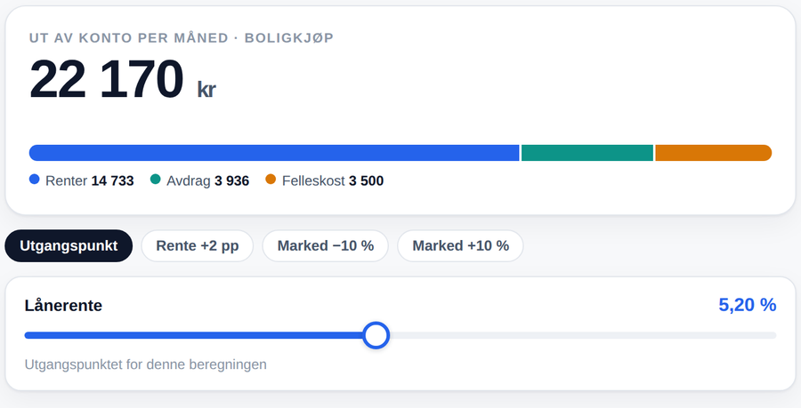
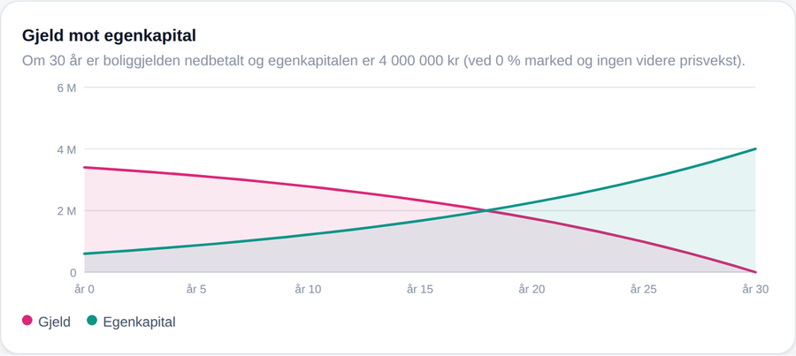

Boliglån, deleie og leie i samme verktøy, med ekte renter hentet automatisk.
Jeg lagde det fordi ingen bankkalkulator klarte å regne på det jeg faktisk sto overfor.
Ingenting installeres. Det åpner seg i nettleseren.
Hvorfor det finnes
En bankkalkulator har to felter
Lånebeløp og rente, så får du ett månedsbeløp. Helt riktig — for et vanlig lån
på en vanlig bolig.
Men et ekte boligkjøp har flere ting samtidig
Egenkapital og omkostninger
Felleskostnader ved siden av lånet
Flere lån med ulik rente og løpetid
Fellesgjeld i borettslag
Eierandel som kan vokse, hvis du deleier
Gjeldsgrad mot lovens tak på fem ganger inntekt
En verdi som beveger seg opp og ned
Ingenting av dette er vanskelig regning. Det er bare
mange små stykker som må holdes sammen samtidig.
Slik ser det ut
Ett tall øverst — det du faktisk betaler. Spakene under endrer alt i samme tastetrykk.

Tre typer i samme verktøy
Boligkjøp
Vanlig kjøp med boliglån. Renter, avdrag, belåningsgrad mot 90 %-grensen,
og hele nedbetalingen år for år.
Deleie
Du eier en andel og leier resten. Fellesgjeld, leie til utleier, og hva det
koster å kjøpe seg opp. Ingen bank har en kalkulator for dette.
Leie
Nullpunktet. Uten et ærlig sammenligningsgrunnlag ser alle boligkjøp bra ut.
Lag flere beregninger og sett dem i samme tabell —
den billigste markeres i grønt.
Gjeld mot egenkapital
Hele nedbetalingen, år for år. Der de to kurvene krysser hverandre eier du
mer enn du skylder.

Ekte tall, hentet automatisk
Styringsrenten
4,25 %
Direkte fra Norges Bank, hver gang siden åpnes
Laveste boliglån
4,95 %
37 bankrenter i søkbar liste
Snitt nye lån
5,22 %
Fra Statistisk sentralbyrå
Trykk på en bank, så settes renta inn i beregningen
Fire kategorier: vanlig, ung, fastrente og rammelån. Både nominell og effektiv
rente vises — og det er den effektive som teller, for den har gebyrene med.
Verktøyet viser aldri et tall det ikke har kilde for.
Tallene dine forlater aldri telefonen
Ingen konto, ingen server, ingen database
Alt regnes lokalt. Beregningene skjer i nettleseren din. Ingen server ser hva du
legger inn — det finnes ingen innlogging og ingen database.
Lagres på din enhet. Beregningene ligger i nettleseren på telefonen du bruker.
Ingen andre kan se dem. Sletter du nettleserdata, forsvinner de.
Det eneste som sendes ut er spørsmålet «hva er renta nå?» til Norges Bank.
De får ikke vite noe om deg.